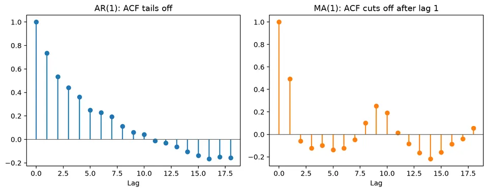
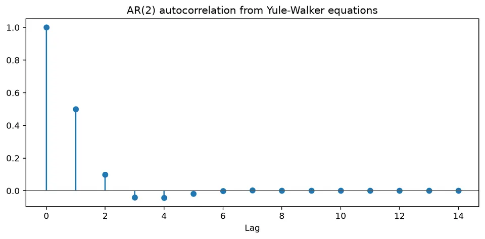
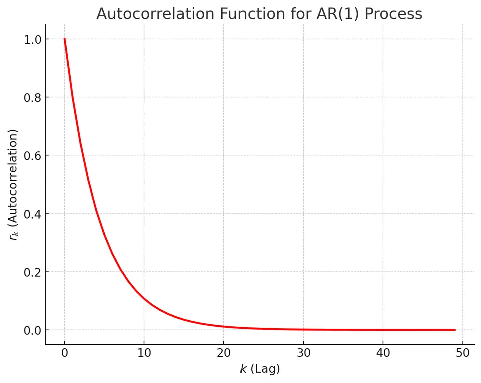
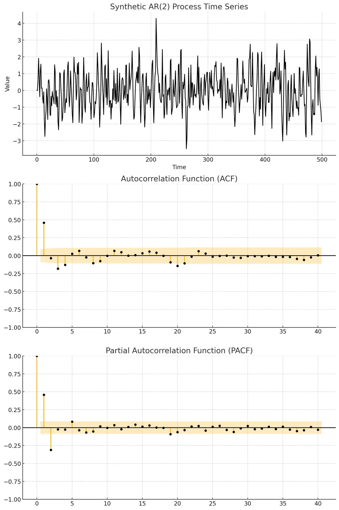
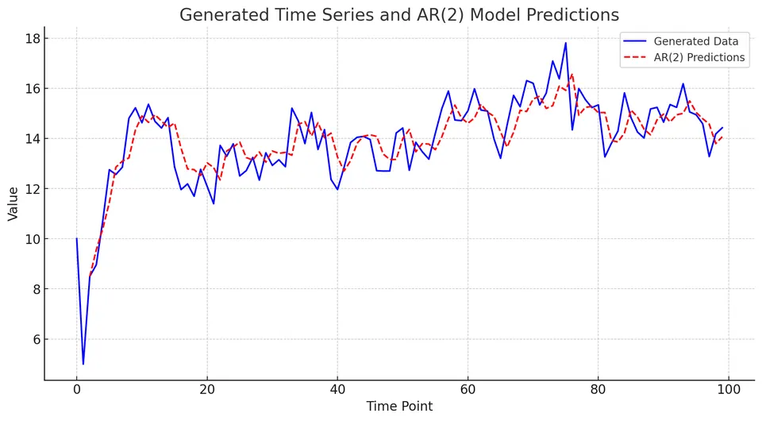

Autoregressive (AR) Models in Time Series Analysis
Autoregressive models describe a time series whose current value depends linearly on its own recent history plus a new innovation. The lag coefficients determine how strongly past observations persist into the present and whether the process tends to decay smoothly, alternate, or oscillate.
The same coefficients also control stationarity, the shape of the ACF and PACF, and the way forecasts return toward a long-run mean. AR modeling therefore connects a simple regression-like equation on lagged values with root conditions, dependence diagnostics, and recursive prediction.
Formula reference
| Quantity / case | General formula | Notes / special case |
|---|---|---|
| AR($p$) | $X_t=c+\sum_{j=1}^{p}\phi_jX_{t-j}+\varepsilon_t$ | Equivalent to ARIMA$(p,0,0)$. |
| Centered AR($p$) | $X_t-\mu=\sum_{j=1}^{p}\phi_j(X_{t-j}-\mu)+\varepsilon_t$ | Convenient for moment and forecast formulas. |
| AR polynomial | $\phi(B)=1-\phi_1B-\cdots-\phi_pB^p$ | Model: $\phi(B)(X_t-\mu)=\varepsilon_t$. |
| Stationarity / causality | $\phi(z)=0\Rightarrow\lvert z\rvert>1$ | Standard backshift-root condition. |
| Stationary mean | $\mu=c/[1-\sum_{j=1}^{p}\phi_j]$ | Requires a stationary model and nonzero denominator. |
| AR(1) | $X_t=c+\phi X_{t-1}+\varepsilon_t$ | Stationary when $\lvert\phi\rvert<1$; random walk boundary at $\phi=1$. |
| AR(1) variance | $\mathrm{Var}(X_t)=\sigma_\varepsilon^2/(1-\phi^2)$ | For $\lvert\phi\rvert<1$. |
| AR(1) ACF | $\rho(h)=\phi^{\lvert h\rvert}$ | Geometric decay or alternating decay. |
| AR($p$) Yule-Walker | $\gamma(h)=\sum_{j=1}^{p}\phi_j\gamma(h-j)$ | Generates the ACF recursion. |
| Infinite-MA representation | $X_t-\mu=\phi(B)^{-1}\varepsilon_t=\sum_{j=0}^{\infty}\psi_j\varepsilon_{t-j}$ | Exists with summable coefficients for a causal stationary AR model. |
| AR(1) $h$-step forecast | $\hat X_{T+h\mid T}=\mu+\phi^h(X_T-\mu)$ | Forecast mean reverts to $\mu$. |
| AR(1) forecast-error variance | $\sigma_\varepsilon^2\sum_{j=0}^{h-1}\phi^{2j}$ | Approaches the unconditional variance as $h\to\infty$. |
| Population PACF | $\alpha(h)=0$ for $h>p$ | Ideal AR($p$) PACF cutoff property. |
Worked calculation: one AR(2) update
Take
$$ X_t=0.4+0.6X_{t-1}-0.2X_{t-2}+\varepsilon_t. $$
If $X_{t-1}=3$, $X_{t-2}=2$, and the new shock is $\varepsilon_t=0.5$, then
$$ X_t=0.4+0.6(3)-0.2(2)+0.5=2.3. $$
Before the new shock is observed, the conditional mean is
$$ E(X_t\mid X_{t-1}=3,X_{t-2}=2)=1.8. $$
The shock moves the realized value away from that mean. The AR polynomial is $1-0.6B+0.2B^2$; the location of its roots determines whether the usual causal AR recursion is stationary.

Autoregressive (AR) models describe serial dependence by expressing the current value of a time series as a linear function of its own past values plus a new innovation. The order $p$ in AR($p$) specifies how many lags appear directly in the model.
Definition of Autoregressive Models
An autoregressive model of order $p$, AR($p$), is
$$ X_t=c+\phi_1X_{t-1}+\phi_2X_{t-2}+\dots+\phi_pX_{t-p}+\varepsilon_t, $$
or equivalently,
$$ X_t=c+\sum_{i=1}^{p}\phi_iX_{t-i}+\varepsilon_t. $$
The coefficients determine how past observations contribute to the conditional mean of $X_t$, while $\varepsilon_t$ represents the new information that is not predictable from those lags.
Components of the AR($p$) Model
- $X_t$ is the value of the series at time $t$.
- $c$ is the intercept. For a stationary AR process, it is generally not equal to the unconditional mean.
- $\phi_i$ is the coefficient on lag $i$.
- $X_{t-i}$ is the observation $i$ periods before time $t$.
- $\varepsilon_t$ is the innovation, usually modeled as white noise with mean zero and constant variance.
Under a weak white-noise assumption,
$$ E(\varepsilon_t)=0, \qquad \mathrm{Var}(\varepsilon_t)=\sigma^2, $$
and innovations are uncorrelated across time. Some estimation and forecasting results use the stronger assumption that the innovations are independent, often Gaussian.
The essential idea is therefore simple: the AR part describes predictable linear dependence on observed past values, while the innovation accounts for the new random component at time $t$.
Order of an AR Model
The order $p$ is the number of lagged observations that enter the conditional mean directly.
An AR(1) uses one lag:
$$ X_t=c+\phi_1X_{t-1}+\varepsilon_t. $$
An AR(2) uses two lags:
$$ X_t=c+\phi_1X_{t-1}+\phi_2X_{t-2}+\varepsilon_t. $$
More generally, an AR($k$) is
$$ X_t=c+\sum_{i=1}^{k}\phi_iX_{t-i}+\varepsilon_t. $$
A larger order does not automatically produce a better model. Extra lags increase flexibility, but they also introduce more parameters and can make estimation less stable.
Example: AR(2) Model in Practice
Suppose the current measurement $y_t$ is modeled using the previous two measurements:
$$ y_t=B_0+B_1y_{t-1}+B_2y_{t-2}+w_t. $$
Here $B_0$ is the intercept, $B_1$ and $B_2$ are the lag coefficients, and $w_t$ is the innovation. Conditional on the two observed lags, the model's one-step mean forecast is
$$ E(y_t\mid y_{t-1},y_{t-2})=B_0+B_1y_{t-1}+B_2y_{t-2}. $$
The innovation $w_t$ is the difference between that conditional mean and the value that is actually observed.
General Interpretation of AR($p$) Models
An AR($p$) model resembles a regression whose predictors are lagged values of the response itself:
$$ X_t=c+\phi_1X_{t-1}+\dots+\phi_pX_{t-p}+\varepsilon_t. $$
This interpretation is useful for estimation, but the time ordering matters. The lags are not an arbitrary collection of predictors: together, their coefficients determine persistence, oscillation, stationarity, and multi-step forecast behavior.
Estimation of Parameters
Several methods are commonly used to estimate $c$ and the AR coefficients.
Least squares estimation minimizes the sum of squared one-step residuals. It is straightforward for AR models because the predictors are observed lagged values, although treatment of the initial observations must be specified.
Yule-Walker estimation uses the relationship between the AR coefficients and the autocovariances of a stationary process. It is transparent and computationally convenient, especially when the theoretical moment relationships are of interest.

The recursion makes that moment relationship concrete: once the AR coefficients are fixed, the autocorrelations satisfy a corresponding lag recursion. Yule-Walker estimation reverses this relationship, using sample autocovariances to estimate the AR coefficients.
Maximum likelihood estimation (MLE) chooses parameters that maximize the likelihood under a specified innovation distribution. For Gaussian AR models, likelihood methods provide a natural framework for estimating the coefficients and innovation variance together.
Different implementations can handle initialization and finite samples differently, so estimates need not be identical even when they target the same AR specification.
Model Selection for Autoregressive (AR) Models
Choosing $p$ requires balancing fit against complexity. ACF and PACF patterns can suggest plausible orders, while information criteria and out-of-sample evaluation help distinguish among candidate models.
Autocorrelation Function (ACF)
The sample autocorrelation at lag $k$ can be written as
$$ r_k= \frac{\sum_{i=1}^{n-k}(Y_i-\bar Y)(Y_{i+k}-\bar Y)} {\sum_{i=1}^{n}(Y_i-\bar Y)^2}. $$
For a stationary AR($p$), the population ACF usually tails off rather than becoming exactly zero after lag $p$. Depending on the coefficients, the decay can be monotone, alternating, or damped and oscillatory.
For example, a stationary AR(1) with $\phi=0.8$ has population autocorrelation $\rho_k=0.8^k$.

The gradual decay in this plot is the kind of pattern that suggests autoregressive persistence, although a sample ACF alone does not identify the order uniquely.
Partial Autocorrelation Function (PACF)
The Partial Autocorrelation Function (PACF) measures the relationship between $Y_t$ and $Y_{t-k}$ after linearly accounting for the intermediate lags $1,\ldots,k-1$.
For an ideal population AR($p$), the PACF is zero after lag $p$. In finite samples, later partial autocorrelations will not be exactly zero, so the cutoff is interpreted together with uncertainty bands and other diagnostics.
The following plots illustrate the typical ACF and PACF behavior of an AR(2):


The key pattern is that the ACF tails off while the PACF concentrates its population signal in the first two lags. These are identification heuristics, not a substitute for fitting and checking candidate models.
Information Criteria for Model Selection
Information criteria compare likelihood fit with a penalty for additional parameters.
Akaike Information Criterion (AIC)
The AIC is
$$ \mathrm{AIC}=-2\ln(L)+2k, $$
where $L$ is the maximized likelihood and $k$ is the number of estimated parameters counted under the chosen convention. Lower values are preferred when comparing models fitted to the same response data with the same likelihood basis.
Bayesian Information Criterion (BIC)
The BIC is
$$ \mathrm{BIC}=-2\ln(L)+k\ln(n), $$
where $n$ is the sample size. Because its penalty grows with $n$, BIC generally penalizes additional parameters more strongly than AIC in larger samples.
Neither criterion establishes that a model is adequate. Residual diagnostics and forecast evaluation are still required.
Steps for Selecting the Optimal AR Model Order
A practical selection process is:
- inspect the transformed series, ACF, and PACF to propose a small set of candidate orders;
- fit those AR models using a consistent estimation method and sample;
- compare AIC or BIC within that candidate set;
- inspect residual autocorrelation and parameter stability;
- compare temporal forecast performance when forecasting is the goal.
For example, suppose candidate models give
| Model | AIC | BIC |
|---|---|---|
| AR(1) | 150 | 155 |
| AR(2) | 140 | 145 |
| AR(3) | 142 | 150 |
Both criteria favor AR(2) among these candidates. That result supports AR(2), but it should still be checked against residual behavior and out-of-sample forecasts.
Properties of AR Models
Stationarity in AR models
For the standard causal AR($p$) model, the roots of
$$ 1-\phi_1z-\cdots-\phi_pz^p=0 $$
must lie outside the unit circle. For AR(1), this reduces to $|\phi_1|<1$. At $\phi_1=\pm1$, the usual finite-variance stationary solution breaks down.
If $|\phi_1|>1$, a bilateral stationary solution can be written only in a noncausal form that depends on future shocks. That mathematical possibility is different from the standard causal AR model used for forecasting, where current values are generated from past information.
Autocorrelation Function (ACF)
For a stationary causal AR model, the ACF tails off with lag. The exact pattern can be exponential, alternating, or damped and oscillatory, depending on the roots of the AR recursion.
Partial Autocorrelation Function (PACF)
For an ideal population AR($p$), the PACF cuts off after lag $p$. This is why the PACF is useful for proposing AR orders, especially when the series is stationary and the sample is reasonably long.

The persistence figure shows how coefficients closer to the unit-root boundary make shocks decay more slowly. That same persistence appears as a slower ACF decay and slower mean reversion in forecasts.
Example: AR(2) Model in Time Series Forecasting
Consider
$$ X_t=c+\phi_1X_{t-1}+\phi_2X_{t-2}+\varepsilon_t. $$
Suppose
- $c=3$,
- $\phi_1=0.6$,
- $\phi_2=-0.2$,
- $X_{t-1}=10$,
- $X_{t-2}=5$.
AR(2) Model Equation
Substituting the observed lags gives
$$ X_t=3+0.6(10)-0.2(5)+\varepsilon_t =8+\varepsilon_t. $$
Calculation
The one-step conditional mean is therefore
$$ \hat X_{t|t-1}=8. $$
The realized observation differs from 8 by the new innovation $\varepsilon_t$.
Interpretation
The value 8 is the forecast conditional on these particular lag values, not a fixed prediction for every time point. At the next step, the forecast changes because the lagged observations change. Multi-step forecasts recursively replace unknown future values with their conditional forecasts.
Visualization

The blue line shows a simulated AR(2) series and the red dashed line shows fitted or predicted values. The relevant comparison is how well the AR(2) conditional mean follows the serial dependence in the data; the remaining deviations should behave like innovations rather than a systematic pattern.
Limitations of AR Models
Linearity assumption. AR models describe linear dependence on past values. Nonlinear thresholds, asymmetric responses, and other nonlinear dynamics require a different specification.
Stationarity requirement. The standard AR theory in this chapter assumes a stationary causal process. Trends, seasonality, unit roots, or structural breaks should be modeled or transformed rather than absorbed by an arbitrarily high AR order.
Sensitivity in parameter estimation. Outliers, near-unit roots, collinear lag columns, and model misspecification can make coefficient estimates unstable or misleading.
Complexity in model selection. ACF/PACF patterns and information criteria narrow the candidate set but do not determine the correct model automatically, especially in short or structurally changing series.
Risk of overfitting. Increasing $p$ can improve in-sample fit while degrading forecast performance. Temporal validation and parsimonious specifications are therefore important.
Student guide: persistence, roots, and prediction
An AR model explains the current value using observed past values:
$$ y_t=c+\phi_1y_{t-1}+\cdots+\phi_py_{t-p}+\varepsilon_t. $$
The observed lags act as regressors, but stationarity and persistence are determined by the AR polynomial rather than by the regression interpretation alone.
AR(1) numbers
For
$$ y_t=1+0.8y_{t-1}+\varepsilon_t, \qquad \mathrm{Var}(\varepsilon_t)=1, $$
the stationary mean is $5$ and the variance is
$$ \frac{1}{1-0.8^2}=2.7778. $$
If the latest centered value is $y_T-\mu=2$, the one-step conditional mean deviation is
$$ \hat y_{T+1|T}-\mu=0.8(2)=1.6, $$
and the five-step deviation is
$$ \hat y_{T+5|T}-\mu=0.8^5(2)=0.6554. $$
Persistence therefore affects both the ACF and the rate at which forecasts return toward the long-run mean.
AR(2) roots
For
$$ y_t=0.6y_{t-1}-0.2y_{t-2}+\varepsilon_t, $$
the homogeneous recursion has characteristic equation
$$ r^2-0.6r+0.2=0. $$
Its discriminant is $0.36-0.8=-0.44$, so
$$ r=\frac{0.6\pm i\sqrt{0.44}}{2}. $$
The roots have modulus $\sqrt{0.2}\approx0.447$, below 1, so the impulse response oscillates while decaying. These recursion roots are the reciprocals of the roots of the AR polynomial written in the backshift variable; the two common root conventions therefore use opposite inside/outside unit-circle statements.
Complex roots can produce alternating or cyclical ACF patterns without implying deterministic seasonality.
Estimation and intercepts
For AR($p$), create a design matrix from rows $t=p+1,\ldots,T$:
$$ \mathbf y= \begin{bmatrix} y_{p+1}\\ \vdots\\ y_T \end{bmatrix}, \qquad \mathbf X= \begin{bmatrix} 1&y_p&\cdots&y_1\\ \vdots&\vdots&&\vdots\\ 1&y_{T-1}&\cdots&y_{T-p} \end{bmatrix}. $$
When $X^\top X$ is nonsingular, the conditional least-squares estimate is
$$ \hat\beta=(X^\top X)^{-1}X^\top y. $$
A deterministic trend, seasonal terms, or highly collinear lag columns can make this calculation unstable. Likelihood estimation treats the initial observations and innovation variance differently and may therefore give slightly different estimates.
The intercept $c$ is not the stationary mean. For AR(1),
$$ \mu=\frac{c}{1-\phi}. $$
For stationary AR($p$),
$$ \mu=\frac{c}{1-\sum_{j=1}^{p}\phi_j}, $$
provided the denominator is nonzero.
Forecast uncertainty
For a centered AR(1),
$$ \hat y_{T+h|T}=\phi^hy_T, $$
and the $h$-step forecast-error variance is
$$ \mathrm{Var}(e_{T+h}) =\sigma^2\sum_{j=0}^{h-1}\phi^{2j}. $$
When $|\phi|<1$, the point forecast converges toward the mean while the forecast-error variance approaches the unconditional variance. Reporting only the point forecast therefore hides an important part of the model's implication.
Overfitting and stability
Increasing $p$ can reduce in-sample error while making coefficient estimates and forecasts unstable. Check root location, coefficient uncertainty, residual autocorrelation, parameter stability over time, and temporal forecast performance.
A model can be technically stationary yet practically very persistent when a root lies close to the unit-circle boundary. In that case, finite-sample estimates and long-horizon forecast intervals deserve extra scrutiny.